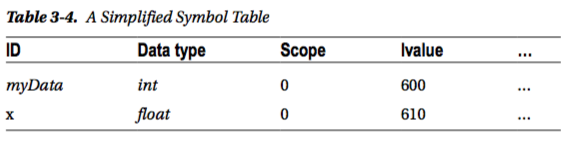
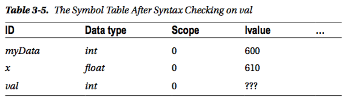
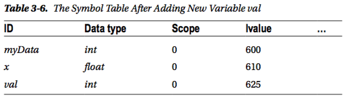
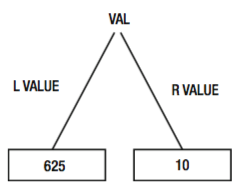

Variables
A var declaration creates a variable of a particular type with a name and set its initial value.
var val int
fmt.Println(val) // 0
In this case the val variable is created and initialized to it's zero value.
The zero value for types are: 0 for numbers, false for booleans, "" for strings and nil for interfaces or reference types (slice, pointer, map, chanel, function)
How a variable is saved into memory?
- We write the code:
var val int
- We execute:
go run main.goorgo build - Compiler checks for errors
- Compiler checks its symbol table to see if
valhas been already defined into the program.

- Compiler created a definition for
val.

- Now
valis declared. It exist in the system table but not have an lvalue (location into memory of pc) - Compiler send message to system Memory Management to ask if the pc has free space for an
intvariable. The System Memory Management decide that theintcan be saved starting from address 625 in memory.

- Now
valis defined; it has an lvalue into system memory. - If
valis used now it will be initialized to it's zero value. This is done by Go automatically to prevent errors like using the informations that could be present into memory.
Assignment
var val = 10
var val int = 10 // the same
val := 10 // short syntax available only inside functions
- The value 10 is stored at the location in memory 625.

package main
import "fmt"
func addOne(v *int) {
*v++ // like *v = *v + 1
// with * we get the rvalue of address
}
func main() {
val := 10
fmt.Println(&val) // hex: 0xc420014050
// base10: 17716822096
// bin: 00000000000000000000000000000100001000000000000100000001010000
fmt.Println(val) // 10
fmt.Println(addOne(&val)) // 11
_ := 20
}
&is used to get thelvalueof variable and the output is in hex. In the case above the variable lives in memory at lvalue:0xc420014050. The Memory Management decide where to put the variable into memory.*is used to indicate that the variable, in the example above,vis a pointer to anint. The variable contains a memory address.*is used to get thervalueof the type to be able to modify the data (dereference the value).